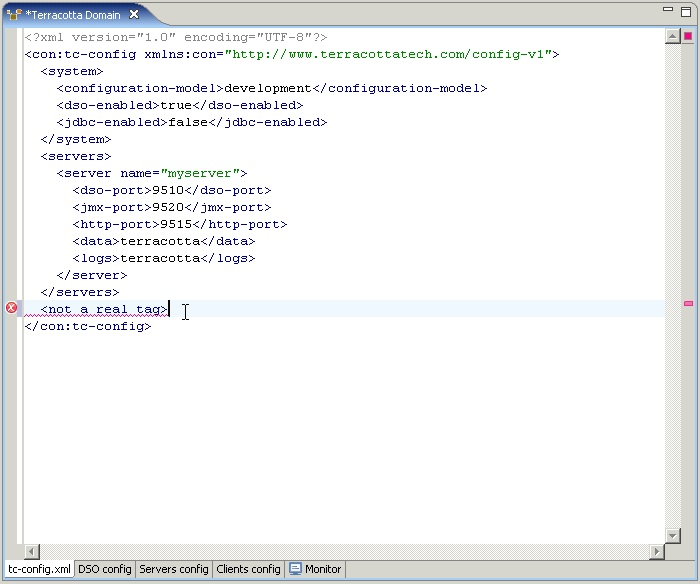
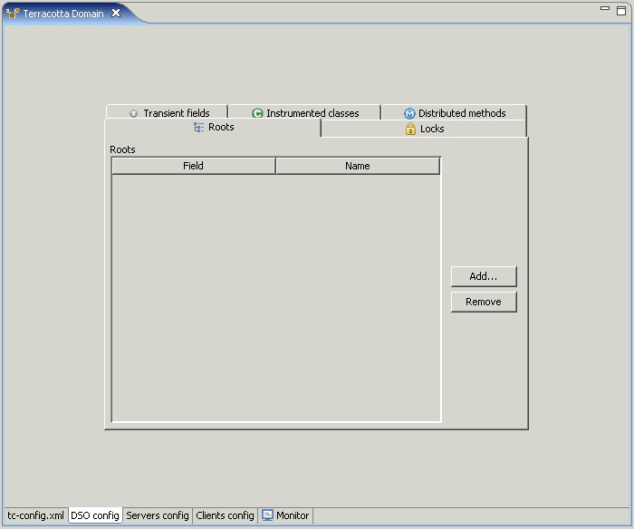
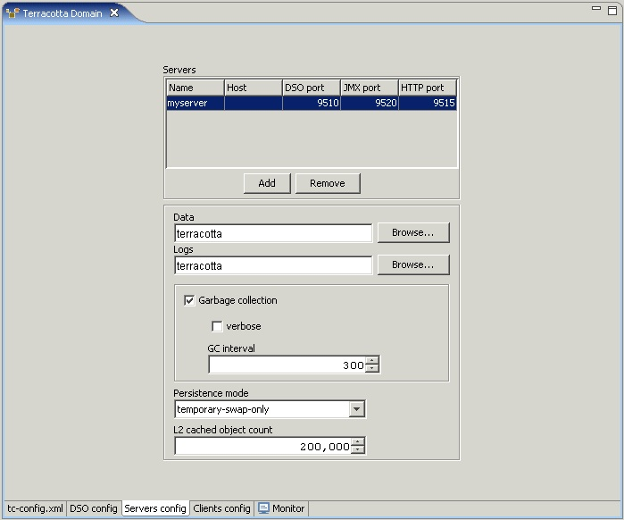
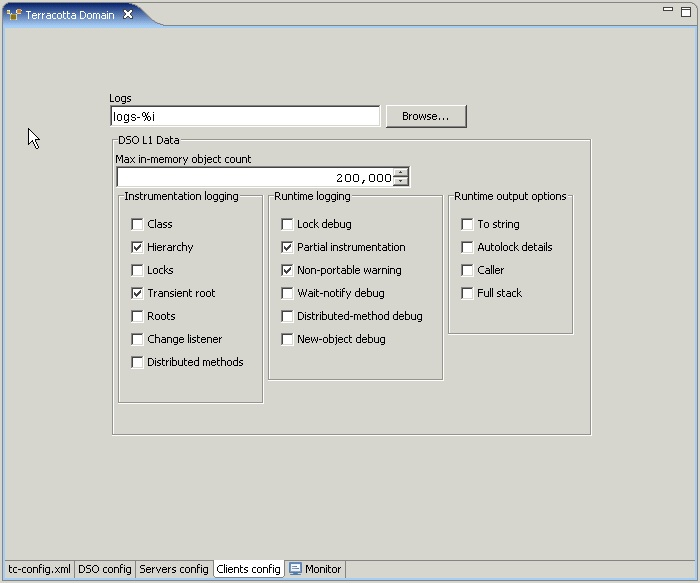
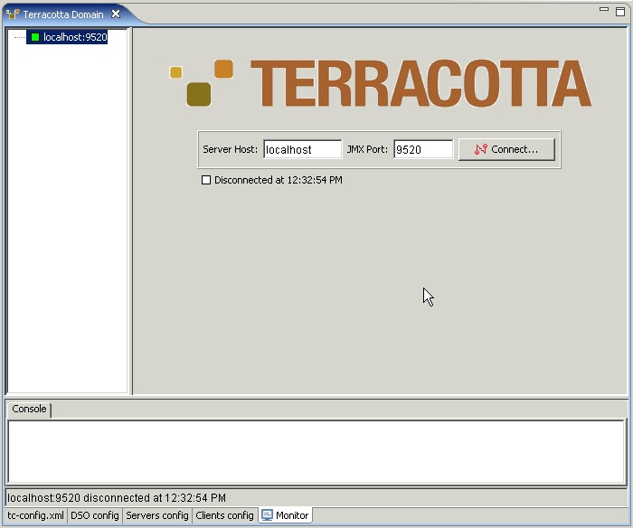
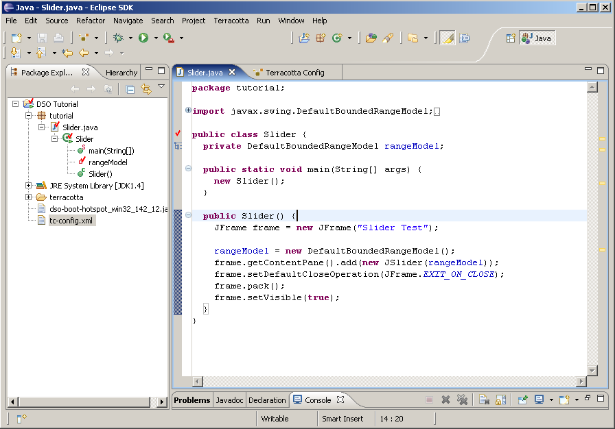
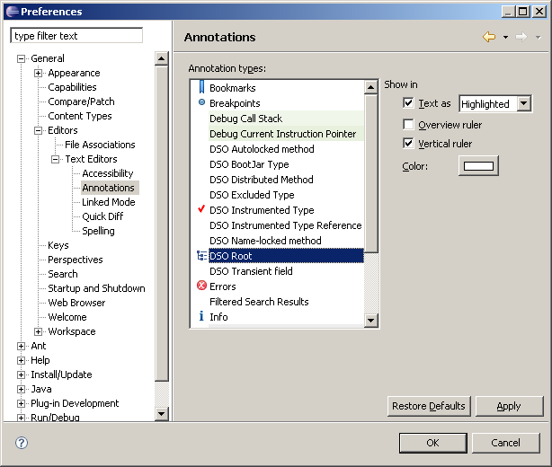

Once you have added Terracotta capabilities to your existing Eclipse project or created a new Terracotta project, you're ready to configure your project for use with DSO. There are three general categories of configuration elements:
There are three different ways you can specify configuration settings for Terracotta DSO:
The Terracotta Configuration Editor is composed of a set of tabbed pages:
Displays the raw XML content of your config file. You can edit this
text directly and, if valid, the changes will be reflected in the
other pages of the editor. Problem markers may appear in the
left-hand margin of this page, and in the Problem view list, to
indicate elements that need to be addressed.

Displays the configuration elements that relate to the DSO
artifacts of your application, such as the set of instrumented
classes, shared roots, and locked and distributed methods.

Displays the configuration elements that are related to the DSO portion
of the Terracotta Server, such as the service ports, log and
database locations, in-memory cache size, and garbage-collection
settings.

Displays the configuration elements that relate to the general DSO
client support, such as the log file location, the cache size, and
various logging options.

Displays an instance of the AdminConsole used to monitor running
servers and their attached clients.

In order for your application to participate in transparent data sharing, the relevant artifacts of your system need to be described to DSO. Primarily, the set of class data members that are to be treated as shared roots need to be listed. As well, the methods that modify those roots must be expressed as locks. For a detailed description of the Java elements in your project that can be configured for use with DSO refer to Configuring Your DSO Application.
You can create configurations for any number of servers, but generally you will only need a single server for developing your DSO application. A server needs information about which ports upon which its various services should listen, where it should store its log files, and where it should create its database. For a detailed description of these server configuration elements refer to Configuring Your DSO Servers.
Currently Terracotta supports a single, unnamed client configuration element. In the future multiple, named client configurations may be supported via a single source file. A client needs information about where to store its log files, the size of the in-memory object cache, and what debug setting are enabled. For a detailed description of these client configuration elements refer to Configuring Your DSO Clients.
Viewing an Eclipse project in the Java Perspective you have available the
Package Explorer and Outline View tabs. By right-clicking elements
to call the context menus you may accomplish nearly everything that can be done through the Java Code Editor or The DSO Application Configuration page. For instance, you can browse to a particular field in one of your classes, invoke the Terracotta context menu on that field, and select the Shared root item. You can similarly lock or make distributed a method.
To make a field a shared root directly in your Java editor, simply select the field name in its declaration, invoke the Terracotta context menu and choose Shared root. An icon indicating the fields rootness will appear in the left-hand margin. You can similarly manipulate methods and types in this way.
DSO artifacts are displayed specially in various Workbench pages and views. For instance, in the Package Explorer view your instrumented DSO classes and shared roots are adorned with a red check. Likewise, in your Java Code Editor similar graphics, known as annotations, are displayed to denote DSO-related items. By default, icons representing your shared roots, instrumented and excluded classes, distributed locks, transient fields, and distributed methods are rendered in the Vertical ruler in the left-hand gutter of the Java editor. In the right-hand gutter, the Overview ruler, simple corresponding region markers allow for direct navigation to the associated item.

You can hide these DSO-related source annotations, change the text style and color, and control if they appear in the Vertical or Overview ruler using the Text Editor Annotations preferences dialog.

Once you have your DSO application running you can use the
AdminConsole to monitor the system. For more information on using
the AdminConsole refer
to Monitoring the server.